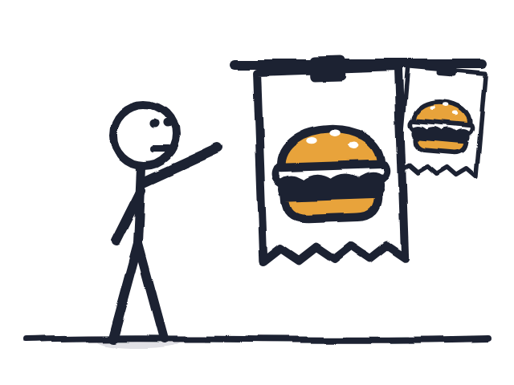
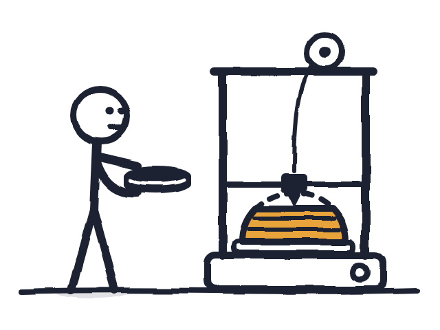
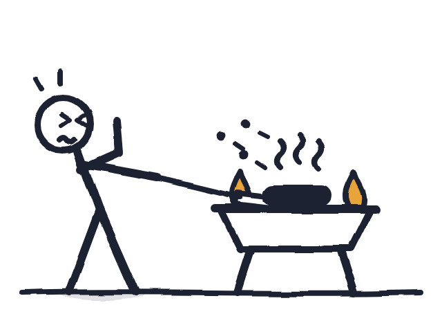
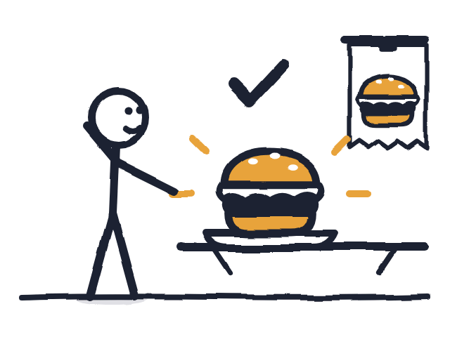
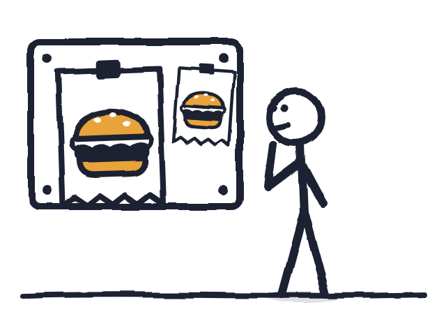
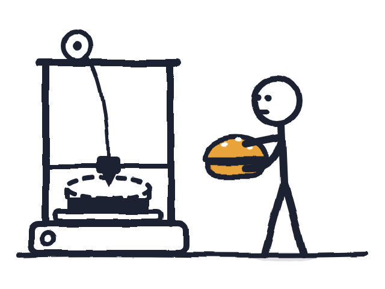
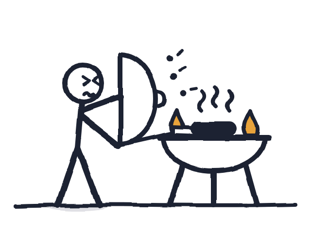
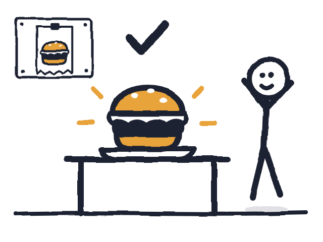

Картка «Бургери» (пілот)
Перша картка how-to для завдання MVP «Бургери», у стилі «чистий скетч», як картка Доставки. Чотири кадри: замовлення, принтер їжі, гриль, готовий бургер. Зелень (квітка з оранжереї за значком) окремим кроком не показана, щоб уміститися в чотири кадри. Обери набір і напиши в чат «A» або «B».
A · Рейка з чеками
РаджуЧитаєш чек із бургером; принтер друкує булку шар за шаром, котлета вже в руках; смажиш котлету на грилі на відстані витягнутої руки, ухиляючись від бризок (гег); бургер на тарілці під своїм чеком.




У грі, Esc → Гід (160×120):
B · Дошка замовлень
Вивчаєш замовлення на дошці; принтер друкує котлету, булка вже в руках; смажиш, сховавшись за кришкою гриля, як за щитом (гег); готовий бургер на стійці під дошкою, фігура радіє.




У грі, Esc → Гід (160×120):